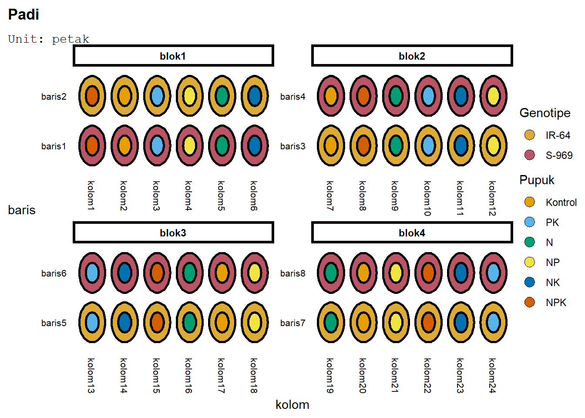
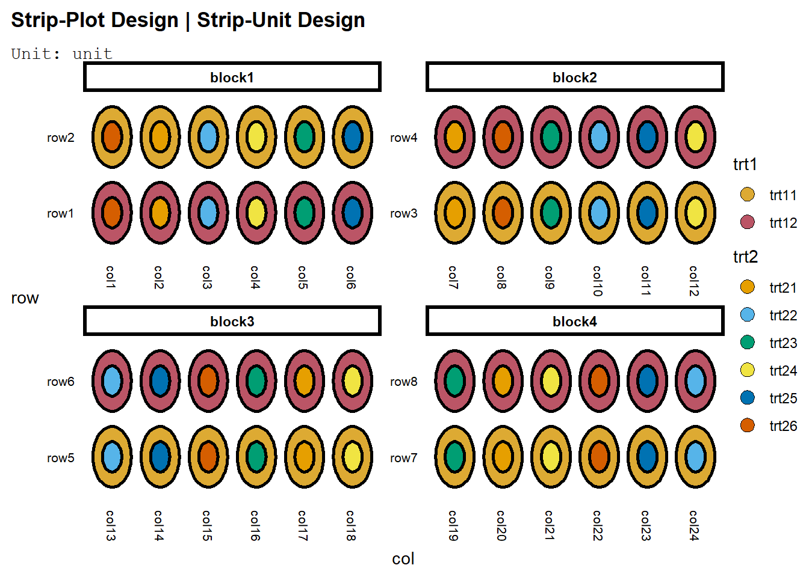
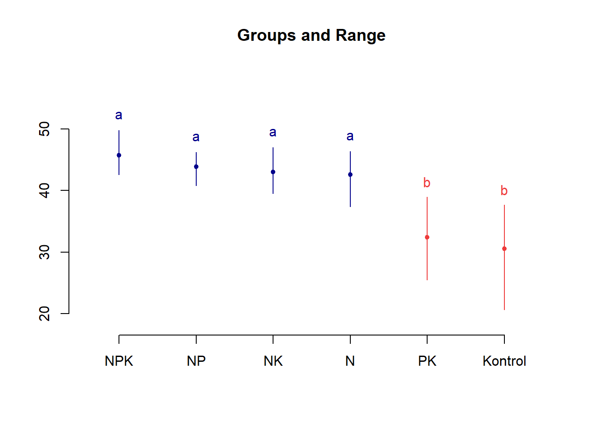

Code
P<-c("Kontrol", "PK", "N", "NP", "NK","NPK")
G<-c("IR-64","S-969")Filosofi dasar rancangan split blok mirip dengan strip plot - ada petak utama dan anak petak. Anak petak tersebut mengandung suatu aspek dari percobaan yang ingin ditekankan (diketahui pengaruhnya dengan ketepatan lebih tinggi). Dalam split blok kasus ini yang ditekankan bukan satu faktor, melainkan interaksi antara faktor. Oleh karena itu, faktor menjadi petak utama.
Rancangan split blok hanya dapat diterapkan dalam RAKL, tidak di RAL. Unit percobaan harus dipisahkan menjadi blok, lalu petak utama diacak di lajur dan baris blok tersebut. Pengacakan semua faktor di lajur dan baris tidak mungkin terjadi di satu unit percobaan yang hanya mengandung satu perlakuan atau satu kombinasi faktor sehingga dibutuhkan blok agar pengacakan semua kombinasi tersebut dapat dilakukan.
Langkah pengacakannya adalah sebagai berikut:
Sebelum langkah-langkah pengacakan di atas diikuti, akan didefinisikan faktor yang akan dicobakan dan tarafnya. Hendak dicobakan pupuk dengan taraf “Kontrol”, “PK”, “N”, “NP”, “NK”, dan “NPK” serta genotipe beras dengan taraf IR-64 dan S-969.
P<-c("Kontrol", "PK", "N", "NP", "NK","NPK")
G<-c("IR-64","S-969")Pengacakan split blok di agricolae cukup sederhana. Nama lain dari split blok adalah strip-plot, dan ada fungsi design.strip(faktor1, faktor2, nblok) di package tersebut:
baganSplitB<-agricolae::design.strip(P,G,r=4,serie=1)Perlihatkan bagan percobaan:
knitr::kable(head(baganSplitB$book, n=10),
col.names= c("Petak", "Blok",
"Pupuk", "Genotipe"))| Petak | Blok | Pupuk | Genotipe |
|---|---|---|---|
| 11 | 1 | NPK | IR-64 |
| 12 | 1 | NPK | S-969 |
| 13 | 1 | N | IR-64 |
| 14 | 1 | N | S-969 |
| 15 | 1 | NK | IR-64 |
| 16 | 1 | NK | S-969 |
| 17 | 1 | Kontrol | IR-64 |
| 18 | 1 | Kontrol | S-969 |
| 19 | 1 | NP | IR-64 |
| 20 | 1 | NP | S-969 |
Dalam rancangan strip plot, ada empat unit percobaan. Pengaruh blok tentu diaplikasikan ke blok, lalu pengaruh faktor ditaruh di lajur dan baris, serta interaksi di tiap unit. Maka, di edibble buat empat unit. Blok, lalu kolom dan baris yang nested_in(blok), dan petak yang di dalam blok - nested_in(blok) dan crossed_by(baris, kolom) - tiap petak merupakan gabungan dari baris dan kolom. Cara mendefinisikan kasus ini adalah dengan menyatakan bahwa petak crossed_by() terlebih dahulu, lalu nested_in() - di tiap blok, petak merupakan gabungan baris dan kolom. Karena operasi dalam kurung dilaksanakan terlebih dahulu, bentuknya menjadi nested_in(blok, crossed_by()).
Lalu, pengacakan dilakukan ke baris dan kolom.
library(edibble)
desSBlok<-design(name="Padi") %>%
set_units(blok=4,
baris=nested_in(blok,2),
kolom=nested_in(blok,6),
petak=nested_in(blok,crossed_by(baris,kolom))) %>%
set_trts(Genotipe=G,
Pupuk=P) %>%
allot_trts(Genotipe~baris,
Pupuk~kolom) %>%
assign_trts("random", seed=420) %>% serve_table
knitr::kable(head(desSBlok,n=10))| blok | baris | kolom | petak | Genotipe | Pupuk |
|---|---|---|---|---|---|
| blok1 | baris1 | kolom1 | petak1 | S-969 | NPK |
| blok1 | baris2 | kolom1 | petak2 | IR-64 | NPK |
| blok1 | baris1 | kolom2 | petak3 | S-969 | Kontrol |
| blok1 | baris2 | kolom2 | petak4 | IR-64 | Kontrol |
| blok1 | baris1 | kolom3 | petak5 | S-969 | PK |
| blok1 | baris2 | kolom3 | petak6 | IR-64 | PK |
| blok1 | baris1 | kolom4 | petak7 | S-969 | NP |
| blok1 | baris2 | kolom4 | petak8 | IR-64 | NP |
| blok1 | baris1 | kolom5 | petak9 | S-969 | N |
| blok1 | baris2 | kolom5 | petak10 | IR-64 | N |
Plot rancangan tersebut:
deggust::autoplot(desSBlok)
Bandingkan dengan default edibble:
strip <- takeout(menu_strip(t1 = 2, t2 = 6, r = 4, seed=420))
examine_recipe(strip)design("Strip-Plot Design | Strip-Unit Design") %>%
set_units(block = 4,
row = nested_in(block, 2),
col = nested_in(block, 6),
unit = nested_in(block, crossed_by(row, col))) %>%
set_trts(trt1 = 2,
trt2 = 6) %>%
allot_trts(trt1 ~ row,
trt2 ~ col) %>%
assign_trts("random", seed = 420) %>%
serve_table()Plotnya akan relatif sama:
deggust::autoplot(strip)
Model linear aditif bagi split plot RAL adalah:
\[ y_{ijk} = \mu + \alpha_i + K_{k}+ \delta_{ik} + \beta_j + \gamma_{jk}+(\alpha\beta)_{ij} + \epsilon_{ijk} \]
Dengan:
Dan hipotesis pengaruh petak utama, anak petak, dan interaksi.
$$ \[\begin{aligned} \text{Pengaruh petak utama (Faktor A)}&:\\ H_{0}&:\alpha_{1}=\ldots=\alpha_{a}=0 \text{ faktor A tidak berpengaruh pada respon}\\ H_{1}&: \text{Paling sedikit ada satu i di mana }\alpha_{i}\neq 0\\ \\ \text{Pengaruh anak petak (Faktor B)}&:\\ H_{0}&:\beta_{1}=\ldots=\beta_{b}=0 \text{ faktor B tidak berpengaruh pada respon}\\ H_{1}&: \text{Paling sedikit ada satu j di mana }\beta_{j}\neq 0\\ \\ \text{Pengaruh interaksi }&:\\ H_{0}&:(\alpha\beta)_{11}=(\alpha\beta)_{12}=\ldots=(\alpha\beta)_{ab}=0 \text{ interaksi tidak berpengaruh pada respon}\\ H_{1}&: \text{Paling sedikit ada sepasang ij di mana }(\alpha\beta)_{ij}\neq 0\\ \\ \text{Pengaruh kelompok}&:\\ H_{0}&:K_{1}=\ldots=K_{k}=0 \text{ Kelompok tidak berpengaruh pada respon}\\ H_{1}&: \text{Paling sedikit ada satu k di mana }K_{k}\neq 0\\ \end{aligned}\]$$
Dan tabel ANOVA:
| Sumber Keragaman | db | JK | KT | F-hit | F(dbP,dbG) |
|---|---|---|---|---|---|
| Blok | r-1 | JKK | JKK/dbA | KTK/KTGA | |
| A | a-1 | JKA | JKA/dbA | KTA/KTGA | |
| Galat (a) | (a-1)(r-1) | JKGA | JKGA/dbGA | ||
| B | (b-1) | JKB | JKB/dbB | KTB/KTGB | |
| Galat (b) | (b-1)(r-1) | JKGA | JKGA/dbGB | ||
| AB | (a-1)(b-1) | JKAB | JKAB/dbAB | KTAB/KTGC | |
| Galat (c) | (a-1)(b-1)(r-1) | JKGC | JKGC/dbGC | ||
| Total | abr-1 | JKT |
Untuk bagian pertama tabel, jumlah kuadrat dihitung dengan:
$$ \[\begin{aligned} FK&=\frac{y^2_{...}}{abr}\\ JKT&=\sum_{i=1}^a\sum_{j=1}^b\sum_{k=1}^r\left(y_{ijk}-\bar{y}_{...}\right)^2=\sum_{i=1}^a\sum_{j=1}^b\sum_{k=1}^r y_{ijk}^2-FK\\ JKST_a&=\sum_{i=1}^a\sum_{j=1}^b\sum_{k=1}^r\left(\bar{y}_{i.k}-\bar{y}_{...}\right)^2=\sum_{i=1}^a\sum_{k=1}^r \frac{y_{i.k}^2}{b}-FK\\ JKA&=\sum_{i=1}^a\sum_{j=1}^b\sum_{k=1}^r\left(\bar{y}_{i..}-\bar{y}_{...}\right)^2=\sum_{i=1}^a \frac{y_{i..}^2}{br}-FK\\ JKK&=\sum_{i=1}^a\sum_{j=1}^b\sum_{k=1}^r \left(\bar{y}_{..k}-\bar{y}_{...}\right)^2=\sum_{k=1}^r \frac{y_{..k}^2}{ab}-FK\\ JKG_{a}&=JKST_a-JKA-JKK\\ \end{aligned}\]$$
Untuk bagian kedua tabel:
\[ \begin{aligned} JKB&=\sum_{i=1}^a\sum_{j=1}^b\sum_{k=1}^r\left(\bar{y}_{.j.}-\bar{y}_{...}\right)^2=\sum_{j=1}^b \frac{y_{.j.}^2}{ar}-FK\\ JKST_{b}&=\sum_{i=1}^a\sum_{j=1}^b\sum_{k=1}^r\left(\bar{y}_{ij.}-\bar{y}_{...}\right)^2=\sum_{k=1}^r\sum_{j=1}^b \frac{y_{.jk}^2}{a}-FK\\ JKG_{b}&=JKST_{b}-JKB\\ \end{aligned} \]
Dan untuk bagian terakhir tabel:
\[ \begin{aligned} JKP&=\sum_{i=1}^a\sum_{j=1}^b\sum_{k-1}^r\left(\bar{y}_{ij}-\bar{y}_{..}\right)^2=\sum_{i=1}^a\sum_{j=1}^b\frac{y_{ij.}^2}{r}-FK\\ JKAB&=\sum_{i=1}^a\sum_{j=1}^b\sum_{k-1}^r\left(\bar{y}_{ij.}-\bar{y}_{i..}-\bar{y}_{.j.}+\bar{y}_{...}\right)^2=\sum_{i=1}^a\sum_{j=1}^b\sum_{k-1}^r\left(\bar{y}_{ij.}-\bar{y}_{...}\right)^2-JKA-JKB\\ &=JKP-JKB-JKA\\ JKG_{c}&=JKT-JKP-JKK-JKG_{a}-JKG_{b} \end{aligned} \]
Load data:
library(googlesheets4)
library(data.table)
Data.SB<-as.data.table(read_sheet("https://docs.google.com/spreadsheets/d/1meWerIyAv1X8jtHXoFCTysvzPy91ptQL6F9sO_-RUNs/edit?usp=sharing"))! Using an auto-discovered, cached token. To suppress this message, modify your code or options to clearly consent to
the use of a cached token. See gargle's "Non-interactive auth" vignette for more details: <https://gargle.r-lib.org/articles/non-interactive-auth.html>ℹ The googlesheets4 package is using a cached token for
'muh.ammarsahab@apps.ipb.ac.id'.✓ Reading from "Data P10 STA1222".✓ Range 'Sheet1'.knitr::kable(Data.SB)| P | G | B1 | B2 | B3 | B4 |
|---|---|---|---|---|---|
| Kontrol | IR-64 | 20.7 | 32.1 | 29.5 | 37.7 |
| Kontrol | S-969 | 27.7 | 33.0 | 26.3 | 37.7 |
| PK | IR-64 | 30.0 | 30.7 | 25.5 | 36.9 |
| PK | S-969 | 36.6 | 33.8 | 27.0 | 39.0 |
| N | IR-64 | 39.9 | 41.5 | 46.4 | 44.5 |
| N | S-969 | 37.4 | 41.2 | 45.4 | 44.6 |
| NP | IR-64 | 40.8 | 43.5 | 43.3 | 43.4 |
| NP | S-969 | 42.2 | 46.0 | 45.9 | 46.2 |
| NK | IR-64 | 42.4 | 45.6 | 44.8 | 47.0 |
| NK | S-969 | 39.8 | 39.5 | 40.9 | 44.0 |
| NPK | IR-64 | 48.6 | 49.8 | 42.6 | 46.6 |
| NPK | S-969 | 42.9 | 45.9 | 43.9 | 45.6 |
Karena data belum berbentuk long - satu baris adalah satu observasi, melt data tersebut. Tiap baris dalam data awal diidentifikasi oleh kombinasi pupuk dan genotipe, sehingga id.vars adalag c("P","G"):
Data.SB<-melt(
Data.SB,
id.vars=c("P","G"),
value.name = "H"
)
knitr::kable(head(Data.SB,10))| P | G | variable | H |
|---|---|---|---|
| Kontrol | IR-64 | B1 | 20.7 |
| Kontrol | S-969 | B1 | 27.7 |
| PK | IR-64 | B1 | 30.0 |
| PK | S-969 | B1 | 36.6 |
| N | IR-64 | B1 | 39.9 |
| N | S-969 | B1 | 37.4 |
| NP | IR-64 | B1 | 40.8 |
| NP | S-969 | B1 | 42.2 |
| NK | IR-64 | B1 | 42.4 |
| NK | S-969 | B1 | 39.8 |
Ubah kolom variable menjadi blok:
setnames(Data.SB,"variable", "B")Untuk melakukan ANOVA, perlu ada struktur error yang khusus. Pada dasarnya, akan ada error khusus untuk faktor serta interaksinya, sehingga tulis Error(B:(P*G)) - akan dihitung Error(B:P), Error(B:G), dan Error(B:(G:P)), atau error tiap faktor dan interaksinya di tiap ulangan (blok). Spesifikasi lain adalah:
aov.SB<-aov(H~P*G+B+Error(B:(P*G)),Data.SB)Warning in aov(H ~ P * G + B + Error(B:(P * G)), Data.SB): Error() model is
singularsummary(aov.SB)
Error: B:P
Df Sum Sq Mean Sq F value Pr(>F)
P 5 1674.8 335.0 18.767 5.62e-06 ***
B 3 197.1 65.7 3.681 0.0362 *
Residuals 15 267.7 17.8
---
Signif. codes: 0 '***' 0.001 '**' 0.01 '*' 0.05 '.' 0.1 ' ' 1
Error: B:G
Df Sum Sq Mean Sq F value Pr(>F)
G 1 0.035 0.0352 0.032 0.87
Residuals 3 3.329 1.1097
Error: B:P:G
Df Sum Sq Mean Sq F value Pr(>F)
P:G 5 78.59 15.72 4.504 0.0105 *
Residuals 15 52.35 3.49
---
Signif. codes: 0 '***' 0.001 '**' 0.01 '*' 0.05 '.' 0.1 ' ' 1aov.SB1<-aov(H~P*G+B+Error(B:P*B:G),Data.SB)Warning in aov(H ~ P * G + B + Error(B:P * B:G), Data.SB): Error() model is
singularsummary(aov.SB1)
Error: B:P
Df Sum Sq Mean Sq F value Pr(>F)
P 5 1674.8 335.0 18.767 5.62e-06 ***
B 3 197.1 65.7 3.681 0.0362 *
Residuals 15 267.7 17.8
---
Signif. codes: 0 '***' 0.001 '**' 0.01 '*' 0.05 '.' 0.1 ' ' 1
Error: B:G
Df Sum Sq Mean Sq F value Pr(>F)
G 1 0.035 0.0352 0.032 0.87
Residuals 3 3.329 1.1097
Error: B:P:G
Df Sum Sq Mean Sq F value Pr(>F)
P:G 5 78.59 15.72 4.504 0.0105 *
Residuals 15 52.35 3.49
---
Signif. codes: 0 '***' 0.001 '**' 0.01 '*' 0.05 '.' 0.1 ' ' 1Pastikan ada kurung, karena anova akan salah tanpa kurung:
aov.SB1<-aov(H~P*G+B+Error(B:P*G),Data.SB)Warning in aov(H ~ P * G + B + Error(B:P * G), Data.SB): Error() model is
singularsummary(aov.SB1)
Error: G
Df Sum Sq Mean Sq
G 1 0.03521 0.03521
Error: B:P
Df Sum Sq Mean Sq F value Pr(>F)
P 5 1674.8 335.0 18.767 5.62e-06 ***
B 3 197.1 65.7 3.681 0.0362 *
Residuals 15 267.7 17.8
---
Signif. codes: 0 '***' 0.001 '**' 0.01 '*' 0.05 '.' 0.1 ' ' 1
Error: B:P:G
Df Sum Sq Mean Sq F value Pr(>F)
P:G 5 78.59 15.718 5.081 0.00444 **
Residuals 18 55.68 3.093
---
Signif. codes: 0 '***' 0.001 '**' 0.01 '*' 0.05 '.' 0.1 ' ' 1Atau, dapat digunakan fungsi strip.plot(blok, faktor 1, faktor 2, respon) dari agricolae:
library(agricolae)
out1<-with(Data.SB,strip.plot(B,P,G,H))
ANALYSIS STRIP PLOT: H
Class level information
P : Kontrol PK N NP NK NPK
G : IR-64 S-969
B : B1 B2 B3 B4
Number of observations: 48
model Y: H ~ B + P + Ea + G + Eb + G:P + Ec
Analysis of Variance Table
Response: H
Df Sum Sq Mean Sq F value Pr(>F)
B 3 197.11 65.70
P 5 1674.80 334.96 18.7668 5.616e-06 ***
Ea 15 267.73 17.85
G 1 0.04 0.04 0.0317 0.86997
Eb 3 3.33 1.11
G:P 5 78.59 15.72 4.5038 0.01047 *
Ec 15 52.35 3.49
---
Signif. codes: 0 '***' 0.001 '**' 0.01 '*' 0.05 '.' 0.1 ' ' 1
cv(a) = 10.6 %, cv(b) = 2.7 %, cv(c) = 4.7 %, Mean = 39.71458 Uji lanjut untuk tiap faktor dapat mudah dilakukan. gl.a adalah derajat bebas galat a, dan Ea galat A.
test1<-agricolae::LSD.test(Data.SB$H, Data.SB$P, out1$gl.a, out1$Ea)
test1$statistics MSerror Df Mean CV t.value LSD
17.84854 15 39.71458 10.63779 2.13145 4.502424plot(test1)
Namun, tampaknya tidak dilakukan penyesuaian pada KTG sehingga perlu dilakukan perhitungan manual jika ingin ada penyesuaian tersebut:
Sedang diteliti ambang batas curah hujan sebagai dukungan untuk aplikasi fungisida waktu dalam pengendalian penyakit busuk daun kentang di Peru menggunakan strip plot.
library(agricolae)
data(huasahuasi)
str(huasahuasi)List of 2
$ AUDPC:'data.frame': 450 obs. of 13 variables:
..$ block: Factor w/ 3 levels "I","II","III": 1 1 1 1 1 1 1 1 1 1 ...
..$ trt : Factor w/ 3 levels "40mm","7-days",..: 1 1 1 1 1 1 1 1 1 1 ...
..$ clon : Factor w/ 5 levels "C386209.10","C387164.4",..: 2 2 2 2 2 2 2 2 2 2 ...
..$ plant: num [1:450] 1 2 3 4 5 6 7 8 9 10 ...
..$ d44 : num [1:450] 0 0 0 0 0 0 0 0 0 0 ...
..$ d51 : num [1:450] 0 0 0 0 0 0 0 0 0 0 ...
..$ d58 : num [1:450] 0 0 0 0 0 0 0 0 0 0 ...
..$ d65 : num [1:450] 0 0 0 0 0 0 0 0 0 0 ...
..$ d72 : num [1:450] 0 0 0 0 0 0 0 0 0 0 ...
..$ d79 : num [1:450] 0 0 0 0 0 0 0 0 0 0 ...
..$ d86 : num [1:450] 0 0 0 0 0 0 0 0 0 0 ...
..$ d93 : num [1:450] 0 0 0 1 1 0 0 0 0 0 ...
..$ d100 : num [1:450] 0 0 0 1 1 0 0 0 0 0 ...
$ YIELD:'data.frame': 45 obs. of 6 variables:
..$ block: Factor w/ 3 levels "I","II","III": 1 1 1 1 1 1 1 1 1 1 ...
..$ trt : Factor w/ 3 levels "40mm","7-days",..: 1 1 1 1 1 2 2 2 2 2 ...
..$ clon : Factor w/ 5 levels "C386209.10","C387164.4",..: 2 1 3 5 4 2 1 3 5 4 ...
..$ y1da : num [1:45] 22.8 10.8 1.6 10.9 3.5 ...
..$ y2da : num [1:45] 5.5 8 11.7 9.9 5.1 7 12.5 9.15 8.8 4.6 ...
..$ y3da : num [1:45] 4.14 6.1 4.15 5.2 2.4 7.6 3.6 4.9 5.9 3.5 ...Karena ada dua data.frame, ambil data.frame YIELD:
YIELD<-huasahuasi$YIELD
str(YIELD)'data.frame': 45 obs. of 6 variables:
$ block: Factor w/ 3 levels "I","II","III": 1 1 1 1 1 1 1 1 1 1 ...
$ trt : Factor w/ 3 levels "40mm","7-days",..: 1 1 1 1 1 2 2 2 2 2 ...
$ clon : Factor w/ 5 levels "C386209.10","C387164.4",..: 2 1 3 5 4 2 1 3 5 4 ...
$ y1da : num 22.8 10.8 1.6 10.9 3.5 ...
$ y2da : num 5.5 8 11.7 9.9 5.1 7 12.5 9.15 8.8 4.6 ...
$ y3da : num 4.14 6.1 4.15 5.2 2.4 7.6 3.6 4.9 5.9 3.5 ...Ada y1da, y2da, dan y3da. Respon yield merupakan penjumlahan dari ketiga respon tersebut - YIELD$yield<- y1da+y2da+y3da, dan perlakuan ada di trt dan clon.
Buat bagan percobaan dengan edibble dan lakukan ANOVA!